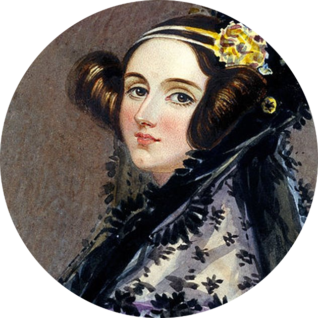

Programación

"La imaginación es la facultad del descubrimiento"
Ada Lovelace
Augusta Ada King, condesa de Lovelace, registrada al nacer como Augusta Ada Byron y conocida habitualmente como Ada Lovelace, fue una matemática y escritora británica, célebre sobre todo por su trabajo acerca de la computadora mecánica de uso general de Charles Babbage, la denominada máquina analítica.